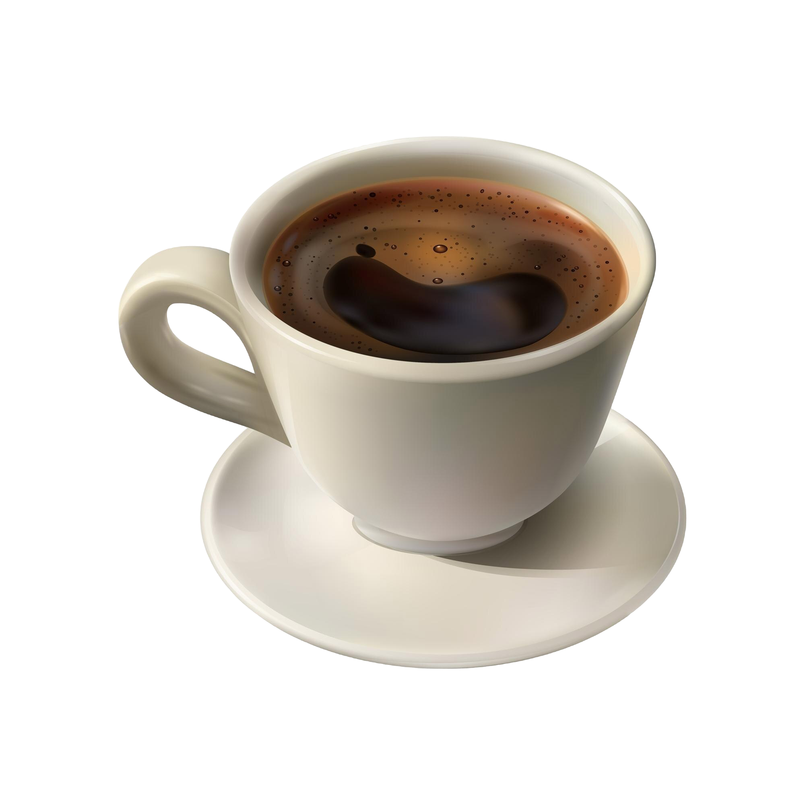

| Вид кофе | Основа | Объём | Молоко | Крепость | Вкус и ароматика | Рекомендуется для |
|---|---|---|---|---|---|---|
|  | Эспрессо | 30мл | Нет | Высокая | Яркий, насыщенный, с горчинкой | Утренний старт и послеобеденный заряд |
| Американо | Эспрессо | 150мл | Нет | Средняя | Мягкий, менее горький | В течение дня, чтобы освежиться |
| Капучино | Эспрессо | 180мл | Молочная пенка | Средняя | Сливочный, с легкими ореховыми нотами | Утро и первая половина дня |
| Латте | Эспрессо | 250мл | Взбитое молоко | Низкая | Мягкий, сливочный, слегка сладкий | Поздний завтрак или обеденный перерыв |
| Лунго | Эспрессо | 60мл | Нет | Средняя | Более мягкий, чем эспрессо, но насыщенный | Утро или послеполуденный кофе |
| Мокко | Эспрессо | 200мл | Шоколад и взбитое молоко | Средняя | Шоколадный, кремовый | Десерт или уютный вечер |
| Фильтр | Фильтр | 200мл | По желанию | Средняя | Легкий, чистый вкус, мягкие ноты | Идеален для продолжительного питья в течение дня |
| По-турецки | Турка | 60мл | Нет | Высокая | Очень насыщенный, густой, с легкой горчинкой и ароматом специй | Послеобеденный кофе, уютные вечера |